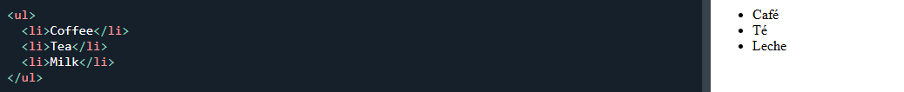
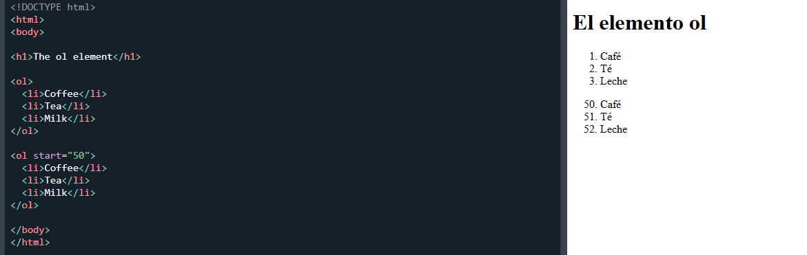
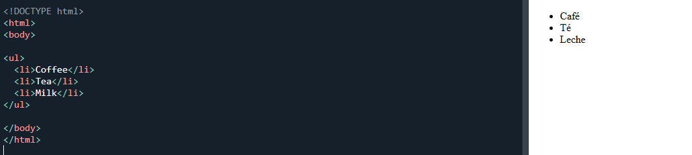

2. Etiquetas de Listas
Las listas permiten organizar informacion de forma clara mediante elementos ordenados o no ordenados.
Definicion
La etiqueta ul (unordered list) se utiliza para crear listas no ordenadas. Los elementos de la lista se muestran normalmente con vinetas o puntos.
Sintaxis basica / demostracion visual

Uso Adecuado
Se utiliza cuando el orden de los elementos no es importante, como listas de caracteristicas, opciones o elementos relacionados.
- Usar listas para organizar informacion relacionada.
- No usar listas solo para crear espacios o diseno visual.
Definicion
La etiqueta ol (ordered list) se utiliza para crear listas ordenadas. Los elementos aparecen numerados automaticamente.
Sintaxis basica / demostracion visual

Uso Adecuado
Se utiliza cuando el orden de los elementos es importante, como instrucciones, procesos o pasos a seguir.
- Utilizar listas ordenadas para secuencias o instrucciones.
- Evitar usar numeros manualmente cuando HTML puede generarlos automaticamente.
Definicion
La etiqueta li (list item) define cada elemento dentro de una lista. Se usa dentro de ul o ol.
Sintaxis basica / demostracion visual

Uso Adecuado
Permite representar cada punto o elemento individual dentro de una lista.
- Mantener el contenido de cada elemento claro y breve.
- Usar listas para mejorar la organizacion y lectura del contenido.